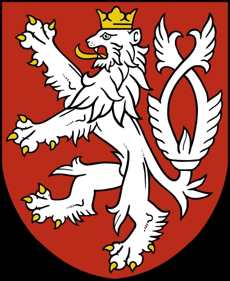

Hertig av Böhmen. Blev ca 38 år.
omkring 851 Velehrad, Tjeckien.
889 Tetin, Böhmen, Tjeckien.
Bořivoj I (tjeckiskt uttal: ˈbɔr̝ɪvɔj) (cirka 852–cirka 889) var den första historiskt dokumenterade hertigen av Böhmen (870–889) och grundare av Přemysliddynastin.
https://genealogics.org/getperson.php?personID=I00020249&tree=LEO
Som ledare för Přemysliderna, som dominerade omgivningarna i dagens Prag, utropade sig Bořivoj omkring 870 till kníže - på latin dux, som betyder suverän furste. Hans titel översattes senare av tyska forskare som "hertig" av böhmarna (tjeckerna). Även om de tyska hertigarna har haft samma titel, var hans titel i själva verket en helt annan. Den tjeckiska duxen var i motsats till dem en suverän härskare. Bořivoj erkändes som sådan av sin överherre Svatopluk I av Stormähren omkring 872, som sände biskop Methodios för att påbörja de böhmiska slavernas omvändelse till kristendomen. Bořivoj och hans hustru Sankt Ludmila döptes av Methodios (troligen 883) och den senare blev en entusiastisk evangelist, även om religionen misslyckades med att slå rot bland Bořivojs undersåtar.
Under åren 883/884 avsattes Bořivoj genom ett uppror till stöd för sin frände Strojmír, och återinsattes 885 endast genom sin överhöghet Svatopluk av Mährens vilja. När Bořivoj hade dött 4 år senare tog Svatopluk över styret över Böhmen på egen hand.
Som med de flesta av de tidiga böhmiska härskarna är Bořivoj en skuggfigur och exakta datum och fakta för hans regeringstid kan aldrig anses vara helt tillförlitliga, även om flera större befästningar och religiösa grunder sägs ha daterats från denna tid. I gamla tjeckiska legender sägs han vara son till en böhmisk prins vid namn Hostivít.
I gamla tjeckiska legender sägs han vara son till en böhmisk prins vid namn Hostivít. Det finns inga historiska bevis för detta påstående.
Dessutom hade hertig Borivoj bara 2 söner: Spytihnev och Vratislav. Resten är en myt.